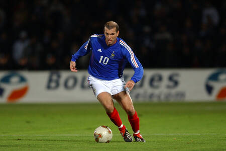

Zinédine Zidane, parfois surnommé Zizou, né le 23 juin 1972 à Marseille (Bouches-du-Rhône), est un footballeur international français ayant évolué au poste de milieu de terrain offensif de 1989 à 2006, devenu ensuite entraîneur. Considéré comme l'un des plus grands joueurs de l'histoire du football, il est le sélectionneur de l’équipe de France depuis le 1er août 2026.
Zinédine Zidane
Zinédine Zidane, nouveau sélectionneur des Bleus
Source : Fédération française de football
Lire l'articleGalerie Photos


